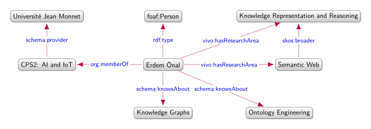

Erdem Önal#0001
I am a second year MSc student in Cyber-Physical and Social Systems: Artificial Intelligence and Internet of Things (CPS2: AI and IoT).
CPS2: AI and IoT is the international track of the Master's program in Computer Science at Université de Lyon, jointly operated by Université Jean Monnet Saint-Étienne and Mines Saint-Étienne (Institut Mines-Télécom).
CPS2: AI and IoT is the international track of the Master's program in Computer Science at Université de Lyon, jointly operated by Université Jean Monnet Saint-Étienne and Mines Saint-Étienne (Institut Mines-Télécom).
Domains of study#0003
My research is in the field of the Semantic Web. I am especially interested in methods and models for representing and exploiting multiple sources of information. This applies to:
- Knowledge representation and reasoning, and ontology engineering
- Knowledge graphs (RDF graph construction and completion)
- Linked Data, publishing interoperable and dereferenceable data on the Web

Research and Projects #0004
Text Mining-Based Profiling of Chemical Environments in Protein–Ligand Binding Assays Across Analytical Techniques. In Chemometrics and Intelligent Laboratory Systems, vol. 271, Elsevier, 2026.
#p-001
The Eautonome Ontology
#p-002
The Eautonome ontology models a domestic greywater monitoring system using the 2023 edition of SOSA/SSN together with SAREF4WATR. It is included in the W3C usage report as both an ontology and a dataset.
The Narn Ontology
#p-003
The Narn Ontology is an OWL ontology that provides a formal vocabulary for describing story plots and representing characters, locations, events, actions, and temporal relations within a narrative.
SHACL en Forme
#p-004
Collection of SHACL shapes with their related ontologies, specifications, profiles, examples, and test files.